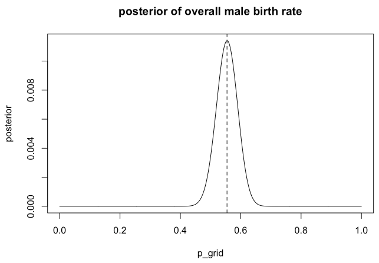

Statistical Rethinking (Ch. 3)
{r setup, include=FALSE}
knitr::opts_chunk$set(echo = TRUE)
library(rethinking)
Preliminary Code
p_grid <- seq(from=0, to=1, length.out=1000)
prior <- rep(1, 1000)
likelihood <- dbinom(6, size=9, prob=p_grid)
posterior <- likelihood * prior
posterior <- posterior / sum(posterior)
plot(p_grid, posterior)

samples <- sample(p_grid, prob=posterior, size=1e4, replace=TRUE)
3E1.
sum(samples < 0.2) / length(samples)
## [1] 5e-04
3E2.
sum(samples > 0.8) / length(samples)
## [1] 0.1181
3E4.
quantile(samples, 0.2)
## 20%
## 0.5155155
3E5.
quantile(samples, 0.8)
## 80%
## 0.7597598
3E6.
HPDI(samples, prob=0.66)
## |0.66 0.66|
## 0.5095095 0.7807808
3E7.
PI(samples, prob=0.66)
## 17% 83%
## 0.4984985 0.7737738
3M1.
p_grid <- seq(from=0, to=1, length.out=1e3)
prior <- rep(1, length(p_grid))
likelihood <- dbinom(8, 15, prob=p_grid)
posterior <- likelihood * prior
plot(p_grid, posterior)

3M2.
samples <- sample(p_grid, prob=posterior, size=1e4, replace=TRUE)
HPDI(samples, prob=0.90)
## |0.9 0.9|
## 0.3343343 0.7177177
3M3.
Construct a posterior predictive check
samples <- sample(p_grid, prob=posterior, size=1e4, replace=TRUE)
w <- rbinom(1e4, size=15, prob=samples)
sum(w == 8) / 1e4
## [1] 0.1471
3M4.
w <- rbinom(1e4, size=9, prob=samples)
sum(w==6) / 1e4
## [1] 0.1732
3M5.
Redo 3M1.
p_grid <- seq(from=0, to=1, length.out=1000)
prior <- ifelse(p_grid < 0.5, 0, 1)
likelihood <- dbinom(x=8, size=15, prob=p_grid)
posterior <- likelihood * prior
posterior <- posterior / sum(posterior)
plot(p_grid, posterior, type="l")
Redo 3M2.
samples <- sample(p_grid, prob=posterior, size=1e4, replace=TRUE)
HPDI(samples, prob=0.9)
## |0.9 0.9|
## 0.5005005 0.7117117
Redo 3M3.
samples <- sample(p_grid, prob=posterior, size=1e4, replace=TRUE)
w <- rbinom(1e4, size=15, prob=samples)
sum(w == 8) / 1e4
## [1] 0.1522
Redo 3M4.
samples <- sample(p_grid, prob=posterior, size=1e4, replace=TRUE)
w <- rbinom(1e4, size=9, prob=samples)
sum(w == 6) / 1e4
## [1] 0.2337
3M6.
You want the 99% percentile interval of the posterior distribution of p to be only 0.05 wide. This means the distance between the upper and lower bound of the interval should be 0.05. How many times will you have to toss the globe to do this?
real_water <- 0.7
p_grid <- seq(from=0, to=1, length.out=1e4)
prior <- rep(1, length(p_grid))
posteriors <- function(N) {
likelihood <- dbinom(round(N*real_water), size=N, prob=p_grid)
posterior <- likelihood * prior
posterior <- posterior / sum(posterior)
return(posterior)
}
for (i in 1:3000) {
posterior = posteriors(i)
samples <- sample(p_grid, prob=posterior, size=1e4, replace=T)
interval <- PI(samples, prob=0.99)
diff <- (interval[2] - interval[1])
if (diff <= 0.05) {
print(i)
break
}
}
## [1] 2133
Hard Problems
data(homeworkch3)
3H1.
p_grid <- seq(from=0, to=1, length.out=1e3)
prior <- rep(1, length(p_grid))
likelihood <- dbinom(x=sum(birth1) + sum(birth2), size=length(birth1)+length(birth2), prob=p_grid)
posterior <- likelihood * prior
posterior <- posterior / sum(posterior)
max_p = p_grid[which.max(posterior)]
print(max_p)
## [1] 0.5545546
plot(p_grid, posterior,type="l", main="posterior of overall male birth rate")
abline(v=max_p, lty=2)

3H2.
samples <- sample(p_grid, size=1e4, replace=T, prob=posterior)
hist(samples)
print(HPDI(samples, prob=0.5))
## |0.5 0.5|
## 0.5305305 0.5765766
print(HPDI(samples, prob=0.89))
## |0.89 0.89|
## 0.4994995 0.6096096
print(HPDI(samples, prob=0.97))
## |0.97 0.97|
## 0.4774775 0.6266266
3H3.
samples <- sample(p_grid, size=1e4, replace=T, prob=posterior)
bsimulation <- rbinom(n=1e4, size=200, prob=samples)
hist(bsimulation, main="Posterior Predictive")
abline( v=sum(birth1)+sum(birth2) , col="red" )
p.samples <- sample(p_grid, size=10000 , replace=TRUE , prob=posterior)
bsim <- rbinom(10000 , size=200 , prob=samples)
# adj value makes a strict histogram, with spikes at integers
dens( bsim , adj=0.1 )
abline( v=sum(birth1)+sum(birth2) , col="red" )
3H4.
samples <- sample(x=p_grid, size=1e4, replace=T, prob=posterior)
bsim <- rbinom(n=1e4, size=100, prob=samples)
dens( bsim , adj=0.1 )
abline( v=sum(birth1), col="red" )

3H5.
female.first.borns <- length(which(birth1 == 0))
bsim <- rbinom(1e4, size=female.first.borns, prob=samples)
dens(bsim, adj = 0.1)
abline(v=sum(birth2[which(birth1 == 0)]), col="red")
 The actual number of boys after girls is higher than predicted (with
assuming independence). This means that gender birth may not be
independent after all.
The actual number of boys after girls is higher than predicted (with
assuming independence). This means that gender birth may not be
independent after all.